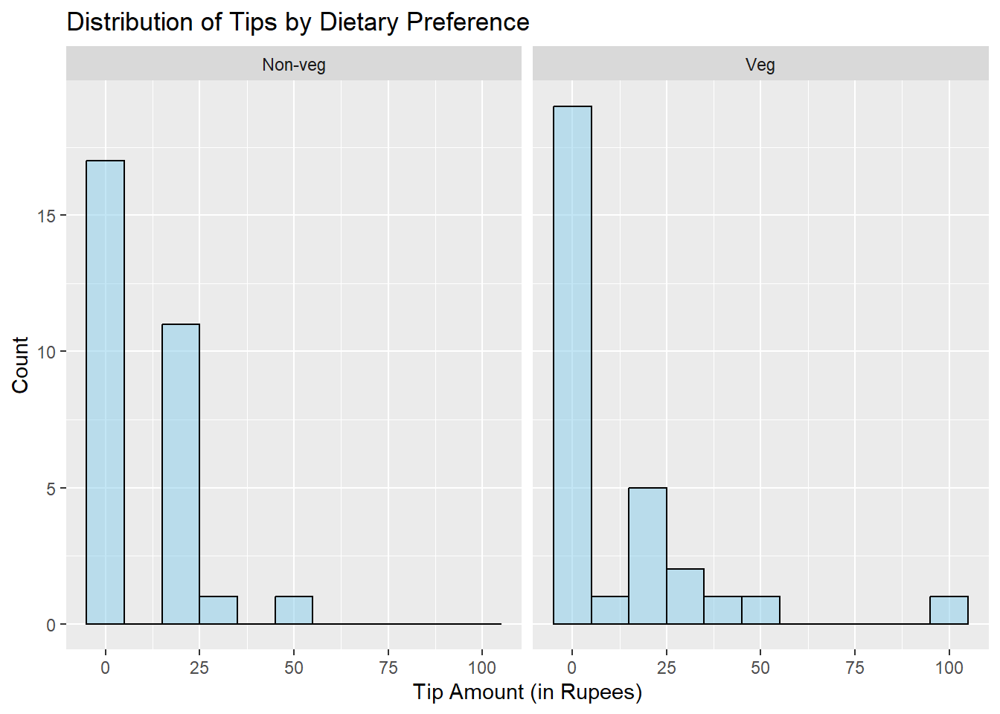
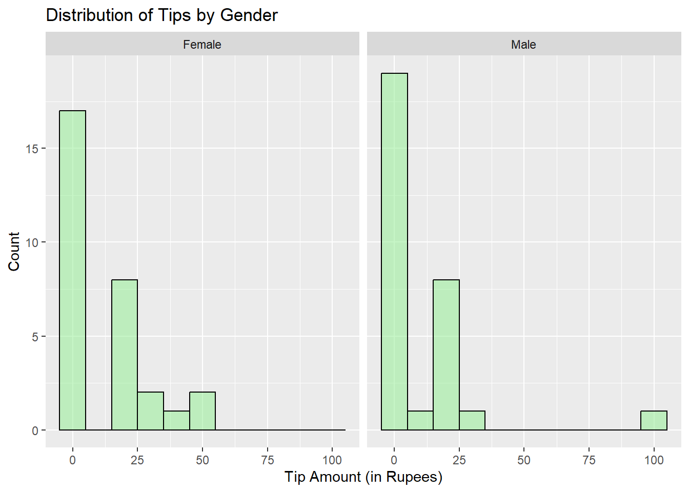
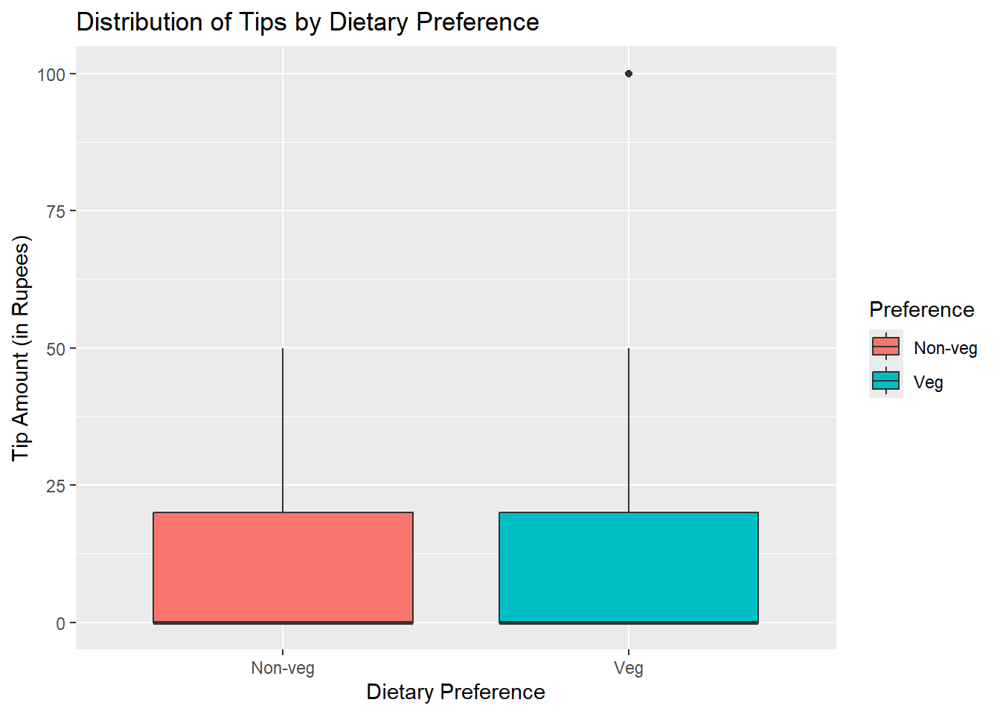
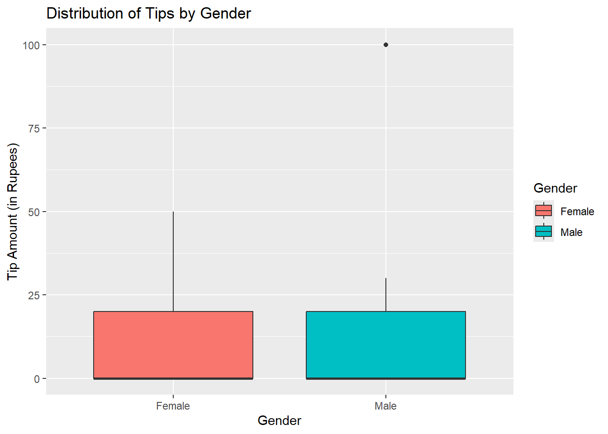
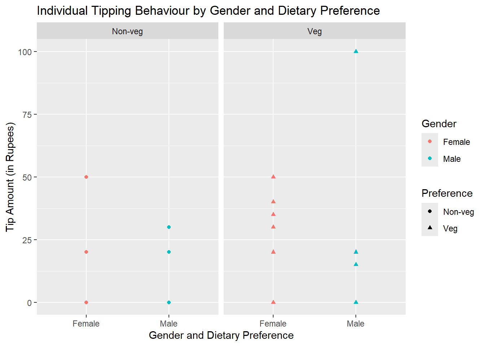
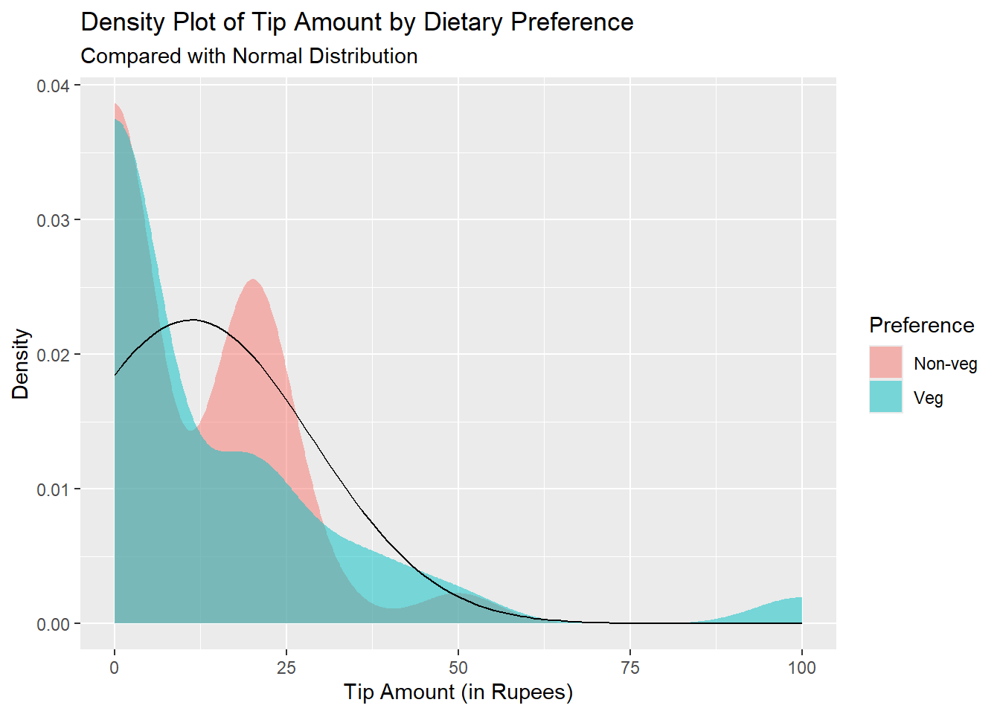
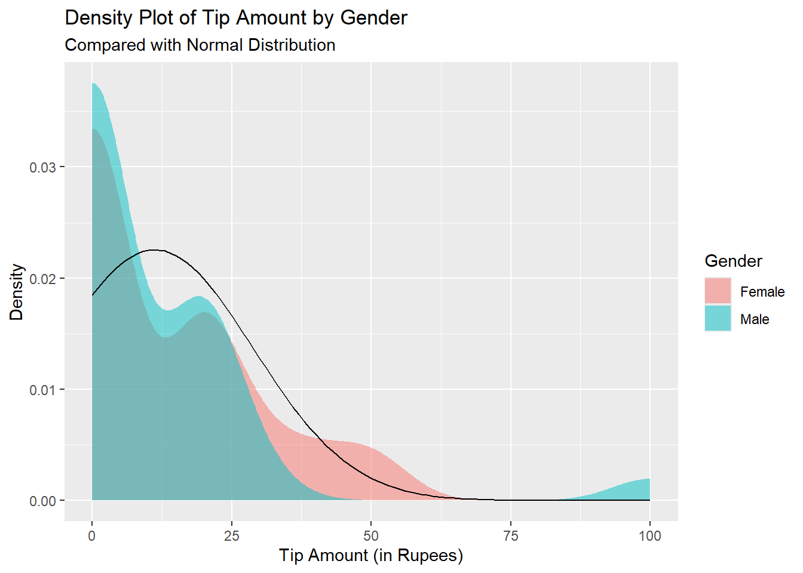
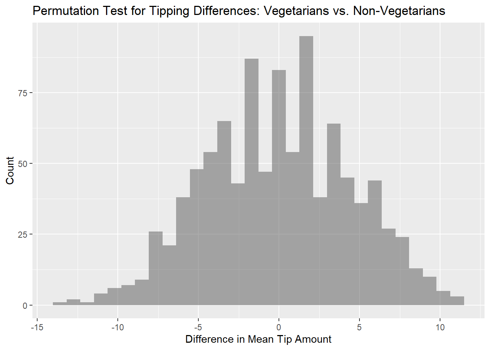
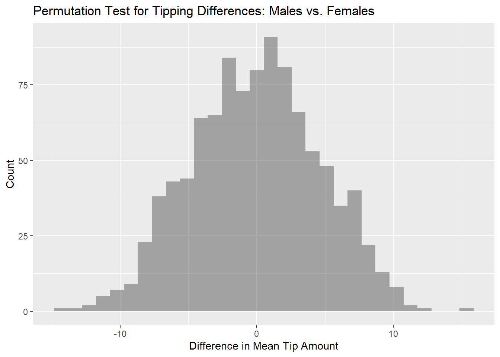

We are investigating the influence of Dietary Preference and Gender on Tipping Behaviour.
library(tidyverse)
── Attaching core tidyverse packages ──────────────────────── tidyverse 2.0.0 ──
✔ dplyr 1.1.4 ✔ readr 2.1.5
✔ forcats 1.0.0 ✔ stringr 1.5.1
✔ ggplot2 3.5.1 ✔ tibble 3.2.1
✔ lubridate 1.9.3 ✔ tidyr 1.3.1
✔ purrr 1.0.2
── Conflicts ────────────────────────────────────────── tidyverse_conflicts() ──
✖ dplyr::filter() masks stats::filter()
✖ dplyr::lag() masks stats::lag()
ℹ Use the conflicted package (<http://conflicted.r-lib.org/>) to force all conflicts to become errors
library(mosaic)
Registered S3 method overwritten by 'mosaic':
method from
fortify.SpatialPolygonsDataFrame ggplot2
The 'mosaic' package masks several functions from core packages in order to add
additional features. The original behavior of these functions should not be affected by this.
Attaching package: 'mosaic'
The following object is masked from 'package:Matrix':
mean
The following objects are masked from 'package:dplyr':
count, do, tally
The following object is masked from 'package:purrr':
cross
The following object is masked from 'package:ggplot2':
stat
The following objects are masked from 'package:stats':
binom.test, cor, cor.test, cov, fivenum, IQR, median, prop.test,
quantile, sd, t.test, var
The following objects are masked from 'package:base':
max, mean, min, prod, range, sample, sum
library(ggformula)library(crosstable)
Attaching package: 'crosstable'
The following object is masked from 'package:purrr':
compact
library(skimr)
Attaching package: 'skimr'
The following object is masked from 'package:mosaic':
n_missing
library(dplyr)library(broom)
Research Experiment to Investigate the Influence of Dietary Preference and Gender on Tipping Behaviour
Objective:
The purpose of this research experiment is to investigate whether there is a significant difference in the amount of tips given by vegetarians and non-vegetarians. Additionally, the study aims to test whether one gender tends to tip more than the other. By collecting and analyzing tipping data, we aim to explore both dietary and gender-based differences in tipping behaviour.
Hypotheses:
Primary Hypothesis:
Non-vegetarians tend to give higher tips on average compared to vegetarians.
Additional Hypothesis: One gender (e.g., males) tends to give higher tips on average compared to the other gender (e.g., females).
Experiment Design:Data Collection:
Sample: The dataset consists of tipping data from 60 students at MAHE Bengaluru. There are 30 males and 30 females, with each gender group containing 15 vegetarians and 15 non-vegetarians. The participants were randomly selected through coin tosses and asked to record the amount they tipped during a meal on October 24th, 2024.
Data Sources: The data was recorded in an Excel sheet by the people conducting the experiment. Each participant reported the tip amount they gave, along with their dietary preference (vegetarian or non-vegetarian) and gender.
Variables Measured:
Target Variable: The amount of tip given by each participant during the experiment period.
Predictor Variables:
Dietary Preference (Vegetarian vs. Non-Vegetarian)
Gender (Male vs. Female)
Sampling:
Time Period: The experiment was conducted on October 24th, 2024, over a period of 1.5 hours.
Participant Selection Criteria: 30 males and 30 females were randomly selected by tossing a coin. Within each gender group, 15 participants were vegetarians and 15 were non-vegetarians. Their dietary preferences and tipping behaviour were recorded accordingly.
Analysis Plan:
Data Cleaning and Transformation: The data was checked for accuracy in the Excel sheet, ensuring that each participant’s tipping amount, dietary preference, and gender were properly recorded, with no missing or erroneous entries.
Exploratory Data Analysis (EDA): Visualizations such as histograms, box plots, and scatter plots will be used to compare tipping distributions between vegetarians and non-vegetarians, as well as between males and females. This will help identify patterns or discrepancies in tipping behaviour.
Statistical Tests:
Two-Sample t-Test (Dietary Preference): A two-independent sample test for means will be conducted to compare the average tip amount given by vegetarians and non-vegetarians. This will help determine if there is a statistically significant difference in tipping behaviour between the two dietary groups.
Two-Sample t-Test (Gender): A separate two-sample t-test will be conducted to compare the average tip amount given by males and females. This will help determine if there is a statistically significant difference in tipping behaviour between the two genders.
Permutation Test (Dietary Preference & Gender): A permutation test will be conducted to assess the likelihood of the observed differences in tipping amounts (for both dietary preference and gender) occurring by chance, providing a non-parametric alternative to the two-sample t-tests.
Descriptive Statistics: Measures like mean, median, and standard deviation will be calculated for both groups (vegetarians vs. non-vegetarians and males vs. females) to summarize tipping behaviour.
Wilcoxon Rank-Sum Test: If the normality assumption is not met, a Wilcoxon rank-sum test (a non-parametric test) will be conducted to compare the tipping behaviour between vegetarians and non-vegetarians, as well as between males and females.
Limitations:
Sample Size: With 30 participants per group (15 vegetarians and 15 non-vegetarians for each gender), the results may not be generalizable to a larger population. A more extensive sample would provide greater reliability.
Contextual Factors: The study did not account for external factors that might influence tipping behaviour, such as the quality of service, the total bill amount, or personal tipping habits, which could have an effect on the tip amount.
Outcome:
The analysis will reveal whether significant differences in tipping behaviour exist between vegetarians and non-vegetarians and between males and females at MAHE Bengaluru. If the hypotheses hold, it would suggest that non-vegetarians, on average, tend to give higher tips than vegetarians, and one gender may tend to tip more than the other. These findings will provide insights into whether dietary preferences and gender influence tipping behaviour within this student population.
Dataset - Tipping
tip <-read_csv("../../data/tip.csv")
Rows: 60 Columns: 4
── Column specification ────────────────────────────────────────────────────────
Delimiter: ","
chr (3): Name, Gender, Preference
dbl (1): Tip
ℹ Use `spec()` to retrieve the full column specification for this data.
ℹ Specify the column types or set `show_col_types = FALSE` to quiet this message.
tip
# A tibble: 60 × 4
Name Gender Preference Tip
<chr> <chr> <chr> <dbl>
1 Aanya Female Veg 0
2 Adit Male Veg 0
3 Aditi Female Veg 20
4 Akash Male Non-veg 0
5 Akshita Female Non-veg 0
6 Anandita Female Non-veg 0
7 Ananya Female Non-veg 20
8 Anaya Female Veg 35
9 Anhuya Female Veg 40
10 Ankit Male Non-veg 0
# ℹ 50 more rows
The dataset shown contains tipping data for 60 students at MAHE Bengaluru. The data includes four variables: Name, Gender, Dietary Preference (Vegetarian or Non-Vegetarian), and Tip Amount. Each row represents one participant’s recorded tip amount. The participants are evenly split between males and females, as well as between vegetarians and non-vegetarians. There are variations in tipping amounts, with some participants tipping as high as 40 units, while others tipped nothing.
tip_modified <- tip %>% dplyr::mutate( Gender =as_factor(Gender))
The Gender variable is stored as a factor, with participants divided evenly between males and females. The Tip amounts vary, with a range from 0 to 100 units. Some participants did not tip, while others left substantial tips, suggesting variability in tipping behaviour.
Inspect - Tipping
inspect(tip_modified)
categorical variables:
name class levels n missing
1 Name character 60 60 0
2 Gender factor 2 60 0
3 Preference character 2 60 0
distribution
1 Aanya (1.7%), Adit (1.7%) ...
2 Female (50%), Male (50%)
3 Non-veg (50%), Veg (50%)
quantitative variables:
name class min Q1 median Q3 max mean sd n missing
1 Tip numeric 0 0 0 20 100 11.16667 17.83556 60 0
The tip amounts range from 0 to 100, with the median tip amount being 0, and the first and third quartiles (Q1 and Q3) being 0 and 20, respectively. The mean tip amount is approximately 11.1, with a standard deviation of 17.8.
Skim - Tipping
skim(tip_modified)
Data summary
Name
tip_modified
Number of rows
60
Number of columns
4
_______________________
Column type frequency:
character
2
factor
1
numeric
1
________________________
Group variables
None
Variable type: character
skim_variable
n_missing
complete_rate
min
max
empty
n_unique
whitespace
Name
0
1
4
9
0
60
0
Preference
0
1
3
7
0
2
0
Variable type: factor
skim_variable
n_missing
complete_rate
ordered
n_unique
top_counts
Gender
0
1
FALSE
2
Fem: 30, Mal: 30
Variable type: numeric
skim_variable
n_missing
complete_rate
mean
sd
p0
p25
p50
p75
p100
hist
Tip
0
1
11.17
17.84
0
0
0
20
100
▇▁▁▁▁
The tips range from 0 to 100, with an average (mean) tip of approximately 11.17 rupees and a standard deviation of 17.84 rupees. Most participants did not give any tips, as indicated by the median and lower quartile values being 0. The data shows variability in tipping behaviour across individuals, with some participants giving significantly higher tips (as shown by the maximum value of 100).
Data Dictionary
Quantitative Data:
Tip (dbl): The total tip amount given by each participant, recorded in Indian rupees.
Qualitative Data:
Name (chr): The name of the participant.
Gender (fct): The gender of the participant, categorized as either Male or Female.
Preference (chr): The dietary preference of the participant, categorized as either Vegetarian (Veg) or Non-Vegetarian (Non-veg).
Histogram - Distribution of Tips by Dietary Preference
gf_histogram( ~ Tip | Preference, data = tip_modified, binwidth =10, fill ="skyblue", color ="black") %>%gf_labs(title ="Distribution of Tips by Dietary Preference",x ="Tip Amount (in Rupees)",y ="Count")

The histogram visualizes the distribution of tips given by vegetarians and non-vegetarians. Both groups show a significant number of participants who gave no tips at all, with vegetarians showing a higher concentration of zero tips compared to non-vegetarians. Among those who did tip, non-vegetarians gave a larger number of tips in the range of ₹0 to ₹25, with fewer participants tipping above ₹50. In contrast, a few vegetarians tipped more substantial amounts, with one participant tipping ₹100, while most tips were clustered between ₹0 and ₹25. Overall, non-vegetarians tend to provide more tips within the lower ranges, while vegetarians exhibit a broader spread, with some giving higher tips. However, the majority of both groups tend to tip small amounts or none at all.
Histogram - Distribution of Tips by Gender
gf_histogram( ~ Tip | Gender, data = tip_modified, binwidth =10, fill ="lightgreen", color ="black") %>%gf_labs(title ="Distribution of Tips by Gender",x ="Tip Amount (in Rupees)",y ="Count")

The histogram displays the distribution of tips given by gender. Both males and females show a significant number of participants who did not give any tips at all, with males having a slightly higher concentration of zero tips. Among those who did tip, most females provided tips in the ₹0 to ₹25 range, with a few tipping up to ₹50. In contrast, males also predominantly tipped in the ₹0 to ₹25 range, but there is a notable outlier where one male tipped ₹100, which is higher than any tip given by females. Overall, both genders tend to give small tips, though males show a broader range of tipping amounts, with the maximum tip coming from a male participant.
Box plot - Distribution of Tips by Dietary Preference
gf_boxplot(Tip ~ Preference,data = tip_modified,fill =~Preference) %>%gf_labs(title ="Distribution of Tips by Dietary Preference",x ="Dietary Preference",y ="Tip Amount (in Rupees)" )

The box plot comparing the distribution of tips between vegetarians and non-vegetarians reveals that both groups have similar ranges of tip amounts, but there is an outlier in the vegetarian group with a higher tip of 100 rupees. The median tip for both vegetarians and non-vegetarians is around the same value. However, the spread (interquartile range) of tips is slightly broader for non-vegetarians. The presence of an outlier in the vegetarian group suggests that one individual tipped significantly more than the majority of participants in both groups, while most participants tipped relatively low amounts. Overall, the box plot indicates that tipping behaviour is fairly similar between the two dietary preference groups, with no major differences in the central tendency.
Box Plot - Distribution of Tips by Gender
gf_boxplot(Tip ~ Gender,data = tip_modified,fill =~Gender) %>%gf_labs(title ="Distribution of Tips by Gender",x ="Gender",y ="Tip Amount (in Rupees)" )

The box plot comparing the distribution of tips between males and females shows that both genders have similar tipping patterns in terms of median and spread. The median tip amount is nearly the same for both groups, with the interquartile range (IQR) for females slightly broader than for males. However, there is an outlier in the male group, where one individual tipped a significantly higher amount (100 rupees) compared to the rest. Despite this outlier, the central tendency and overall distribution appear quite similar between males and females, suggesting no major gender-based differences in tipping behaviour.
Scatter Plot - Individual Tipping Behaviour by Gender and Dietary Preference
gf_point(Tip ~ Gender | Preference, data = tip_modified,color =~ Gender,shape =~ Preference) %>%gf_labs(title ="Individual Tipping Behaviour by Gender and Dietary Preference",x ="Gender and Dietary Preference",y ="Tip Amount (in Rupees)" )

The scatter plot visually represents individual tipping behaviour, comparing tips based on both gender and dietary preference. In the plot, female and male participants are shown with different colours, while vegetarian and non-vegetarian participants are distinguished by different shapes. The data reveals that the majority of participants across all categories (female/male, veg/non-veg) tend to give lower tips (below 50 rupees), but there are a few outliers, especially in the vegetarian category, where some participants gave tips as high as 100 rupees. Non-vegetarians, on the other hand, generally tip in smaller amounts.
Density Plot
tip_modified %>%gf_density(~ Tip, fill =~ Preference, alpha =0.5) %>%gf_fitdistr(~ Tip, dist ="dnorm") %>%gf_labs(title ="Density Plot of Tip Amount by Dietary Preference",subtitle ="Compared with Normal Distribution",x ="Tip Amount (in Rupees)",y ="Density" )

tip_modified %>%gf_density(~ Tip, fill =~ Gender, alpha =0.5) %>%gf_fitdistr(~ Tip, dist ="dnorm") %>%gf_labs(title ="Density Plot of Tip Amount by Gender",subtitle ="Compared with Normal Distribution",x ="Tip Amount (in Rupees)",y ="Density" )

The density plots provide a visual comparison of the tipping behaviour across dietary preferences (vegetarians vs. non-vegetarians) and gender (males vs. females). In both cases, the tipping behaviour is skewed towards lower tip amounts, with the highest density of tips being in the range of 0 to 25 rupees. The comparison against the normal distribution suggests that the tip data does not follow a normal distribution, especially for the lower tip amounts.
For dietary preferences, non-vegetarians tend to tip slightly higher than vegetarians, as indicated by the density curve extending further towards higher tip amounts. However, the difference is not substantial, and both groups show a similar overall distribution of low tips.
In terms of gender, the male participants appear to give slightly higher tips compared to female participants, as seen by the male density curve being more spread towards the higher tip amounts. Nonetheless, both genders also demonstrate a strong tendency towards giving lower tips, with a majority of tips clustered in the lower ranges. Overall, while there are slight differences, tipping behaviour across both dietary preference and gender is heavily skewed towards lower amounts.
The cross table shows that the tipping dataset contains an equal number of males and females, with 30 participants in each group. Similarly, there are equal numbers of participants with dietary preferences, 30 for vegetarians and 30 for non-vegetarians. When breaking down by gender and dietary preference, the average tip given by females who are non-vegetarians is ₹11.33, while females who are vegetarians tip an average of ₹13. For males, non-vegetarians give an average of ₹8.67, while vegetarians tip an average of ₹11.67. The median tip for all groups remains ₹0, indicating that many participants may not have tipped, skewing the distribution. These results suggest some differences in tipping behaviour based on dietary preferences and gender, though the prevalence of non-tipping behaviour is noticeable across all groups.
T-test for Vegetarians vs. Non-Vegetarians
t_test_veg_nonveg <-t.test( Tip ~ Preference,data = tip_modified,var.equal =FALSE) %>%broom::tidy()t_test_veg_nonveg
The t-test conducted to compare the average tip amounts between vegetarians and non-vegetarians shows a p-value of 0.617. This high p-value indicates that there is no statistically significant difference between the two groups. The estimated mean tip for vegetarians is ₹12.33, while for non-vegetarians, it is ₹10, resulting in a mean difference of approximately ₹2.33. The 95% confidence interval for this difference is from -11.66 to 6.99, which includes zero, further suggesting that there is no significant difference in tipping behaviour based on dietary preference. Therefore, the data does not support the hypothesis that non-vegetarians tip more than vegetarians.
T-test for Males vs. Females
t_test_gender <-t.test( Tip ~ Gender,data = tip_modified,var.equal =FALSE) %>%broom::tidy()t_test_gender
The t-test comparing the average tip amounts between males and females reveals no significant difference in tipping behaviour. The mean tip for males was ₹10.17, and for females, it was ₹12.17. The test produced a t-statistic of 0.431 and a p-value of 0.668, which is much higher than the standard significance level of 0.05. Additionally, the 95% confidence interval ranges from -7.29 to 11.29, suggesting that the true difference in means could be anywhere within this range, including zero.
Wilcoxon Rank-Sum Test for Vegetarians vs. Non-Vegetarians
The Wilcoxon Rank-Sum Test conducted to compare the tipping behaviour between vegetarians and non-vegetarians resulted in a p-value of 0.83. This high p-value suggests that there is no statistically significant difference in the tipping amounts between the two groups. The confidence interval also crosses zero, reinforcing the conclusion that the median tip amounts for vegetarians and non-vegetarians are not significantly different. This non-parametric test confirms that dietary preference does not appear to influence tipping behaviour within this dataset.
The results of the Wilcoxon Rank-Sum Test comparing tipping behaviour between males and females show no significant difference in tipping amounts between the two genders. The p-value is 0.42, which is much higher than the conventional threshold of 0.05, indicating that any observed differences in tipping amounts between males and females are not statistically significant. Both the confidence interval values are very close to zero, further supporting the conclusion that there is no significant difference between male and female tipping behaviour. Thus, tipping behaviour seems similar across both genders in this dataset.
Permutation Test for Vegetarians vs Non-Vegetarians
perm_test_veg_nonveg <-do(1000) *diffmean(Tip ~shuffle(Preference), data = tip_modified)perm_test_veg_nonveg
The permutation test for comparing tipping behaviour between vegetarians and non-vegetarians was conducted with 1000 iterations. The distribution of the difference in mean tips (diffmean) under the null hypothesis, where dietary preferences are randomly shuffled, suggests that the observed differences are small. The diffmean values range from negative to positive, indicating that differences in mean tip amounts vary slightly between vegetarians and non-vegetarians in the randomized samples. These differences appear to center around 0, with most of the values being close to it, implying that the observed differences between the two groups might not be statistically significant, and any difference in tipping behaviour could largely be due to chance.
Plotting the results of the Permutation Test
gf_histogram(~ diffmean, data = perm_test_veg_nonveg, bins =30) %>%gf_labs(title ="Permutation Test for Tipping Differences: Vegetarians vs. Non-Vegetarians",x ="Difference in Mean Tip Amount",y ="Count" )

The histogram from the permutation test comparing tipping differences between vegetarians and non-vegetarians shows that the distribution of differences in mean tip amounts is approximately centered around zero. This suggests that, under random shuffling of dietary preferences, the observed differences in mean tips could occur by chance.
Observed difference for Vegetarians vs Non-Vegetarians
observed_diff_veg_nonveg <-diffmean(Tip ~ Preference, data = tip_modified)observed_diff_veg_nonveg
diffmean
2.333333
The observed difference in the mean tip amount between vegetarians and non-vegetarians is approximately 2.33 rupees, with non-vegetarians giving a slightly higher average tip compared to vegetarians.
Calculating the p-value
p_value_veg_nonveg <-prop(~ (abs(diffmean) >=abs(observed_diff_veg_nonveg)), data = perm_test_veg_nonveg)p_value_veg_nonveg
prop_TRUE
0.634
The p-value calculated for the permutation test comparing the tipping behavior between vegetarians and non-vegetarians is 0.675. This high p-value suggests that there is no statistically significant difference in the mean tip amounts between the two dietary preference groups. The observed difference of 2.33 rupees could have likely occurred by random chance, indicating that the dietary preference (vegetarian vs. non-vegetarian) does not have a strong influence on tipping behaviour in this sample. Therefore, we fail to reject the null hypothesis.
Permutation test for Males vs Females
perm_test_gender <-do(1000) *diffmean(Tip ~shuffle(Gender), data = tip_modified)perm_test_gender
The permutation test comparing the tipping behaviour between males and females was conducted by randomly shuffling the gender labels 1,000 times and calculating the difference in mean tip amounts for each shuffle. The resulting distribution of differences varied around zero, with values like -7.33, 1.00, -2.00, and 3.66 observed. This distribution suggests that any observed difference in tipping behaviour between males and females could largely be attributed to random variation, rather than a true underlying difference in tipping habits based on gender.
Plotting the results of the Permutation Test
gf_histogram(~ diffmean, data = perm_test_gender, bins =30) %>%gf_labs(title ="Permutation Test for Tipping Differences: Males vs. Females",x ="Difference in Mean Tip Amount",y ="Count" )

The permutation test for tipping differences between males and females shows a symmetric distribution centered around zero. The differences in mean tipping amounts vary from approximately -10 to 10 rupees. This indicates that, based on the resampled data, the observed differences in tipping between males and females are likely due to random chance. The distribution does not suggest a strong or consistent difference in tipping behaviour between the two genders.
Observed difference for Males vs Females
observed_diff_gender <-diffmean(Tip ~ Gender, data = tip_modified)observed_diff_gender
diffmean
-2
The observed difference in mean tips between males and females is -2 rupees. This indicates that, on average, males tend to tip 2 rupees less than females in the dataset.
Calculating the p-value
p_value_gender <-prop(~ (abs(diffmean) >=abs(observed_diff_gender)), data = perm_test_gender)p_value_gender
prop_TRUE
0.699
The permutation test conducted to assess the difference in tipping behaviour between males and females resulted in a p-value of 0.697. This p-value is quite high, indicating that the observed difference in mean tips between males and females (-2 rupees) is not statistically significant. In other words, there is a 69.7% probability that the observed difference could have occurred by random chance. Therefore, we do not have enough evidence to conclude that there is a significant difference in tipping behaviour between males and females based on this dataset.
Summary of Results for the Tipping Behaviour Research Experiment
The research experiment aimed to determine if there was a significant difference in tipping behaviour between vegetarians and non-vegetarians, and between male and female students at MAHE Bengaluru. The following statistical tests were conducted:
Two-Sample t-Test (Welch’s t-test):
Vegetarians vs. Non-Vegetarians: The two-sample t-test comparing the mean tip amounts between vegetarians and non-vegetarians resulted in a p-value of 0.6169. This indicates no statistically significant difference in the average tip amount between the two dietary groups, as the p-value is much higher than the typical threshold of 0.05.
Males vs. Females: The t-test comparing the mean tip amounts between males and females resulted in a p-value of 0.6679. This also suggests no significant difference in tipping behaviour based on gender.
Wilcoxon Rank-Sum Test:
Vegetarians vs. Non-Vegetarians: The Wilcoxon test, a non-parametric alternative to the t-test, resulted in a p-value of 0.8327. This further supports the t-test results, indicating no significant difference between vegetarians and non-vegetarians in terms of tipping behaviour.
Males vs. Females: The Wilcoxon test comparing males and females resulted in a p-value of 0.4221, which also suggests no statistically significant difference between the two genders.
Permutation Test:
Vegetarians vs. Non-Vegetarians: The permutation test comparing tipping behaviour between vegetarians and non-vegetarians resulted in a p-value of 0.675, confirming that the observed difference in mean tip amounts of approximately 2.33 rupees is likely due to random variation and not a significant underlying difference.
Males vs. Females: The permutation test for tipping differences between males and females resulted in a p-value of 0.697. The observed difference in mean tip amounts (-2 rupees, with females tipping slightly more on average) is also likely due to random variation.
Conclusion:
Based on the results of these tests, there is no evidence to suggest that either dietary preference (vegetarian vs. non-vegetarian) or gender (male vs. female) significantly impacts tipping behaviour in this dataset. The high p-values across all tests indicate that the observed differences in tipping amounts are likely due to chance. Therefore, the initial hypotheses that non-vegetarians might tip more than vegetarians, or that one gender tips more than the other, are not supported by the data.